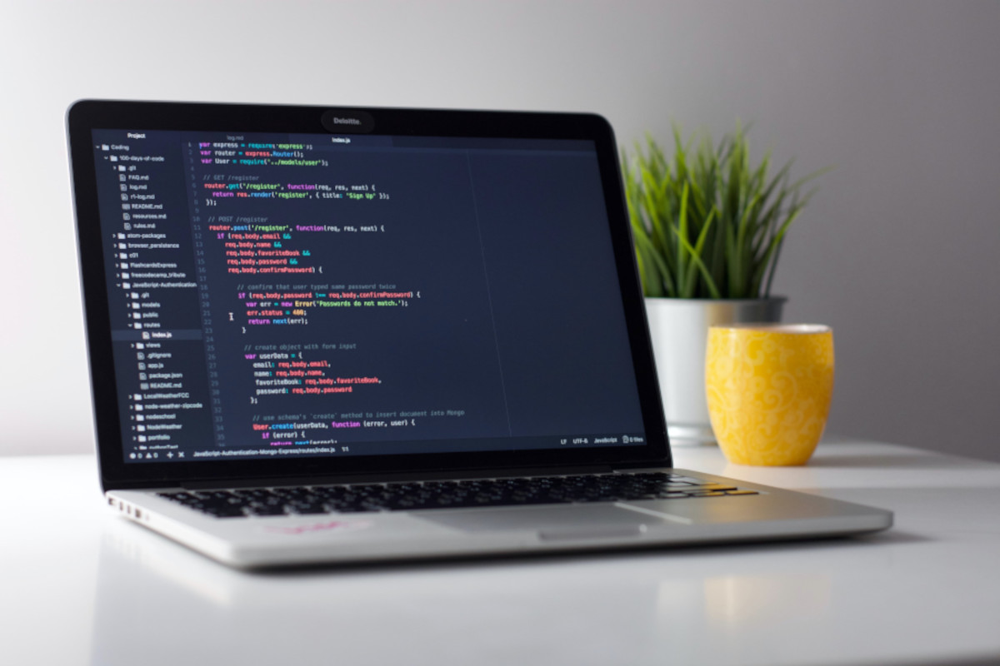
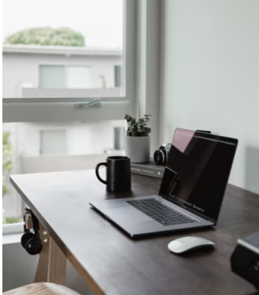

Novos meios de trabalho
A revolução da Progamação
Saiba tudo sobre a revolução da progamação
O que é?
No fina de 2019 começou a pandemia no Mundo e no Brasil, sendo assim as grandes empresas de progamação tiveram que readaptar seus metodos de trabalho para algo mais flexível ou remoto, e com essa ideia de trabalho remoto com uma pesquisa feita com quase um milhão de pessoas que trabalham com progamação mostrou um aumento na produtividade dos trabalhores e até melhorias dentro da empresa, e provando que trabalho remoto é possivel e seja lucrativo. Mas nos tempos mais atuais as empresas grandes como facebook, instagram e outras estão incentivando o trabalho remoto permanentemente e outras empresas dentro do brasil estão querendo voltar com a ideia de trabalho presencial ou meio expediente com uma pesquisa divulgada em abril de 2021 mostrou que 68% do brasileiros não estão com a ideia de sair do trabalho remoto algumas preferem pedir demissão ao voltar para o trabalho presencial, sendo assim dando uma ideia de que trabalhar no conforto de casa virou uma ideia para o trabalho do futuro mercado de trabalho se adaptar a isso.
Como as empresas se adaptam ao trabalho remoto?
Quando a pandemia chegou ao Brasil no inicio de março de 2020 varias empresas tiveram que mudar para o trabalho remoto ou mais familiar home-office mesmo que varias empresas não tivesem estrutura para essa grande mudança e ser algo sem nenhum planejamento serviu como um grande experimento de uma nova forma de trabalho. Em meio a tudo isso surgiu uma ideia de trabalhar para fora do Brasil sem sair da sua casa e profissionais na area da tecnologia e progamação estão aproveitando esse onda para trabalharem em empresas estrangeiras fora do Brasil sendo mais facil pelo trabalho remoto e até mais acessivel para a area de TI no mercado. em um artigo publicano na internet mostrou que 4,5% dos trabalhadores na área da tecnologia pretendem a pedir demissão do seu emprego atual para ir trabalhar em empresas fora dos Brasil tornando isso um grande movimento.